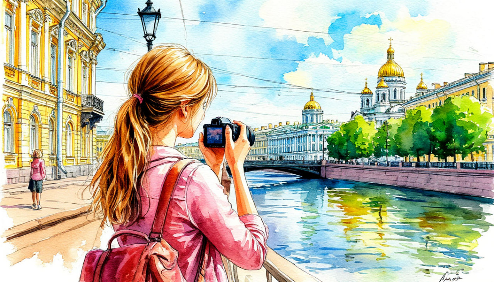

Выходные в Петербурге

Даты тура:
26 июня (пт) - 29 июня (пн)
10 июля (пт) - 13 июля (пн) | 24 июля (пт) - 27 июля (пн)
14 августа (пт) - 17 августа (пн) | 21 августа (пт) - 24 августа (пн)
Стоимость тура на даты 26 - 29 июня:
- 19 840 р. - взрослый
- 18 840 р. - пенсионеры/школьники
- 22 840 р./чел - одноместное размещение
Стоимость тура на остальные даты:
- 18 990 р. - взрослый
- 17 990 р. - пенсионеры/школьники
- 21 990 р./чел - одноместное размещение
По программе:
- - Царское Село
- - Территория Петропавловской крепости
- - Ночная экскурсия по городу
- - Петергоф. Нижний парк
- - Кронштадт
- - Морской Никольский Собор
- - Якорная площадь
- - Аллея Адмиралов
- - Парк Остроф Фортов
Программа тура:
1 день: Отправление
- 17-20- выезд из Костромы от ТРЦ "РИО". Ночной переезд.
2 день: Санкт-Петербург. Царское Село
- Прибытие в Санкт-Петербург.
- Завтрак в кафе города. Отправление в Царское село (г. Пушкин)
- Путевая экскурсия, которая поведает о боевой славе города-героя, теме дорог в Императорской России и современности, о великих литераторах нашей страны и эпохе дворцовых переворотов.
- Во время экскурсии в Царском селе мы посетим плеяду парковых ансамблей – сквер Царскосельского лицея, который не просто представляет собой зеленую зону, а одно из самых символичных и умиротворенных мест в Пушкине, тесно связанное с золотым веком русской поэзии, полюбуемся памятником Александру Сергеевичу Пушкину, а также посетим Екатерининский парк, который поражает своим масштабом, разнообразием ландшафтов, архитектурных сооружений и удивительной гармонией
- Возвращение в Санкт-Петербург.
- Обед в кафе
- Обзорная экскурсия по городу. Экскурсия включает осмотр главных достопримечательностей города. Посмотрите Дворцовую площадь, Невский проспект, Зимний дворец, Казанский и Исаакиевский соборы, храм Спас-на-Крови.
- Посещение территории Петропавловской крепости.
- Размещение в отеле. Свободное время в городе
- Ночная автобусная экскурсия по городу «Мосты повисли над Невой….». Мы проедем по самым красивым улицам и набережным, любуясь иллюминацией Невского проспекта, мерцающими отражениями мостов в водах Мойки, Фонтанки и Невы. Вы увидите, как знакомые днем архитектурные шедевры – Исаакиевский собор, Спас на Крови, Казанский собор – преображаются в свете прожекторов, представая перед вами во всей драматической красе.
3 день: Петергоф
- Завтрак
- Отправление в Петергоф
- Экскурсия в Нижнем парке – одно из главных сокровищ Петергофа, изобилует роскошными фонтанами. Простирается от Большого дворца в сторону Финского залива и занимает территорию 102,5 гектаров. Только представьте, в общей сложности в Нижнем парке насчитывается 150 фонтанов!
- Обед
- Отправление в Кронштадт
- Путевая экскурсия пройдет с внешним осмотром дворцово-паркового ансамбля «Ораниенбаум», далее по дороге-дамбе через уникальный тоннель, который проходит под Кронштадтским корабельным фарватером на глубине более 27 метров.
- Кронштадт – город, в которых многое произошло в истории впервые: построен первый в России сухой док, проведена первая в России операция на сердце в морском госпитале, впервые применено хлорирование воды, здесь же прошли первые испытания подводных лодок, и другие интересные события.
- Во время экскурсии мы посетим Морской Никольский собор, Якорную площадь, Аллею Адмиралов, а также грандиозный проект «Парк Остров Фортов»
- Окончание экскурсионной программы, отправление домой.
4 день: Прибытие домой
- - проживание в гостинице*
- * уточняется
- - питание: 2 завтрака + 2 обеда
- - услуги гида-экскурсовода
- - экскурсионная программа
- - автобусное обслуживание по программе тура
Прибытие в Кострому в первой половине дня (ориентировочно)
В стоимость тура входит:
- Для бронирования необходимы данные паспорта РФ и свидетельства о рождении, если с вами путешествуют дети
- Предоплата – 50% от стоимости тура. Остаток за 30 дней до даты выезда.
- Любой тур можно оформить не выходя из дома. Подробнее: Тут
Стоимость тура не зафиксированы и могут быть изменены в большую или меньшую сторону в зависимости от уровня спроса в любой момент.
Время начала экскурсий и их порядок указано ориентировочно.
Фирма-исполнитель оставляет за собой право замены экскурсий без уменьшения общего объема экскурсионной программы.
По вопросам бронирования обращайтесь: